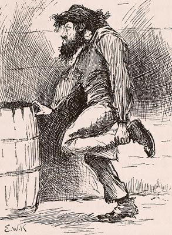

"He was most fifty, and he looked it. His hair was long
and tangled and greasy and hung down, and you could see his eyes
shining through like he was behind vines. It was all black, no
gray; so was his long, mixed-up whiskers. There warn't no color
in his face, where his face showed; it was white; not like
another man's white, but a white to make a body sick, a white to
make a body's flesh crawl -- a tree-toad white, a fish-belly
white."